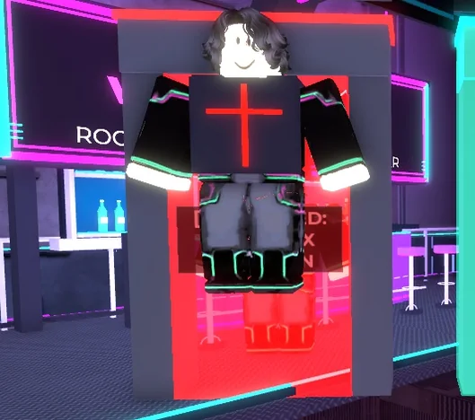
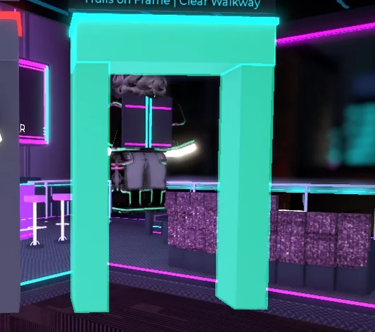

About this guide’s evidence
Reviewed against the linked Roblox documentation and published MeshMogul product limits. Recommendations and example scenes are guidance, not measured results. This review date does not represent a new native Studio test. Current UI details that still need confirmation are called out in the text.
Quick Takeaways
- Why it matters:
CollisionFidelitycontrols how Roblox simplifies your triangle geometry into physics shapes, and non-Boxhulls still consumePhysicsPartsmemory even whenCanCollide = false. - How it affects your creations:
HullandDefaultcan shrink-wrap straight across doorways and concave trim,PreciseConvexDecompositionraises physics/memory overhead when overused, andTriangleMeshPart.CollisionFidelitycannot simply be reassigned on an existing mesh by a normal runtime script . - What you can actually do about it: Inspect hulls with Studio's Collision fidelity visualizer, use
Box+ invisible Block colliders for doorways and trim, and let MeshMogul's defaultTransparency = 1exclusion keep helper colliders out of visual mesh bakes .
Visual field note / 04
An opening must be open to collision, too
Before · a filled hull

A solid collision volume can close the visible opening.
After · posts and lintel

Keep the passage clear between the collision pieces.
Watch the staged doorway sequence
Six supplied Studio frames show the staged avatar moving along the two routes. This is an educational frame sequence, not a verified physics test.
It is the oldest rite of passage in Roblox building: you model or convert a gorgeous stone archway, hit Play, sprint straight toward the opening, and bounce off thin air like a mime trapped in a glass box.
Your visual mesh is fine. The culprit is almost always CollisionFidelity—Roblox's invisible physics shape wrapped around MeshParts and UnionOperations—and trying to force a complex visual silhouette to also double as the game's physics hull.
1. The Five CollisionFidelity Modes Explained
Roblox exposes five Enum.CollisionFidelity values on TriangleMeshPart (MeshPart and UnionOperation) :
| Mode | How Roblox Builds the Physics Shape | Best Used For | Watch Out For |
|---|---|---|---|
Box |
Single axis-aligned bounding box around the mesh | Decorative props, distant architecture, or visual meshes paired with separate manual colliders | Blocks openings completely if CanCollide = true on a doorway |
Hull |
Single convex "gift-wrap" shell stretched around outer vertices | Rounded boulders, crates, convex pillars, and simple sloped trim without interior holes | Bridges straight across caves, arches, and L-shaped recesses |
Default |
Balanced automatic decomposition (faster than Precise, richer than Hull) | General mid-complexity props that don't have tight walk-through tunnels | Can still close narrow gaps or round sharp interior stairs |
Tunable |
Async customizable convex decomposition controlled via CollisionPrecision (0 to 1, Studio v744+) |
Tuning convex detail deliberately on concave architecture when you want middle ground between Default and PreciseConvexDecomposition |
Not a one-click runtime toggle; verify generated hull in Studio |
PreciseConvexDecomposition |
High-accuracy Hierarchical Approximate Convex Decomposition (HACD) | Tight playable ramps, intricate stairways, or hero interiors where hull fidelity truly affects gameplay | Expensive PhysicsParts memory and slow collision build cost if spammed everywhere |
2. Three Collision Traps That Surprise Builders
Trap 1: CanCollide = false Does Not Free PhysicsParts Memory
Setting CanCollide = false stops characters from hitting a mesh, but Roblox still builds and stores the CollisionFidelity physics hulls in PhysicsParts memory so CanQuery (raycasts) and CanTouch (Touched events) can query them . If a decorative bush or hanging chandelier has PreciseConvexDecomposition, switching CanCollide off leaves the heavy collision hulls sitting in memory. Set decorative non-interactive visual meshes to CollisionFidelity = Enum.CollisionFidelity.Box (and turn off CanCollide, CanQuery, CanTouch when appropriate).
Trap 2: Sloped Trim (Hull vs. Box)
If you place a diagonal roof gable or angled trim mesh and leave it on Box, the bounding box sticks out far past the slope as a huge invisible rectangular ledge. Switching that angled beam to Hull hugs the diagonal triangle profile tightly—without needing PreciseConvexDecomposition.
Trap 3: Runtime CollisionFidelity Immutability
You cannot dynamically mutate myMeshPart.CollisionFidelity = Enum.CollisionFidelity.PreciseConvexDecomposition inside a live LocalScript or Server Script like a color toggle. Because physics decompositions are baked structural properties, scripts must use APIs such as AssetService:CreateMeshPartAsync / ApplyMesh rather than assigning the enum property directly at runtime .
3. The Gold-Standard Fix: "Box + 3 Invisible Block Parts" for Doorways
Whenever you have a doorway, arch, tunnel, or hollowed wall frame, stop fighting convex decomposition altogether:
- Select the visual archway
MeshPartand set: CollisionFidelity = Enum.CollisionFidelity.BoxCanCollide = false,CanQuery = false,CanTouch = false(unless bullets/raycasts specifically need detailed hits)- Inside the same
Model, add 3 plainPart(Block) colliders (Transparency = 1,Anchored = true,CanCollide = true): - Left pillar collider
- Right pillar collider
- Top lintel header collider
[ Visual Arch MeshPart ] --> Box + CanCollide=false (zero invisible wall!)
[ Left Block (T=1) ] --> Clean rectangular wall collision
[ Right Block (T=1) ] --> Clean rectangular wall collision
[ Top Lintel Block (T=1)] --> Clean doorway clearance overhead
Why is this pattern superior to PreciseConvexDecomposition? Because three plain Roblox Block primitives cost negligible physics computation, give players crisp snag-free doorway shoulders, and leave zero complex convex decomposition memory on the archway mesh.
4. Auditing High-Cost Collision in 10 Seconds
Studio gives you two fast ways to hunt down accidental PreciseConvexDecomposition meshes before they quietly drain PhysicsParts memory:
- Explorer Filter Bar: Type
CollisionFidelity=PreciseConvexDecompositionright into Explorer's filter box to highlight matching instances. - Read-Only Command Bar Summary: Run this safe snippet in Studio's Command Bar (
View -> Command Bar) to count everyMeshPartandUnionOperationbyCollisionFidelitymode:
Read-only Studio Command Bar inspection
-- Read-only: audits CollisionFidelity distribution across MeshParts and Unions in workspace
local counts: { [string]: number } = {}
local canCollideFalsePrecise = 0
for _, inst in ipairs(workspace:GetDescendants()) do
if inst:IsA("TriangleMeshPart") then
local key = inst.CollisionFidelity.Name
counts[key] = (counts[key] or 0) + 1
if not inst.CanCollide and inst.CollisionFidelity == Enum.CollisionFidelity.PreciseConvexDecomposition then
canCollideFalsePrecise += 1
end
end
end
for mode, total in pairs(counts) do
print(string.format("[Collision Audit] %-28s : %d", mode, total))
end
if canCollideFalsePrecise > 0 then
warn(string.format(
"Found %d non-collidable meshes still using PreciseConvexDecomposition (switch decorative ones to Box to save PhysicsParts memory).",
canCollideFalsePrecise
))
end
5. How MeshMogul Handles Invisible Collider Parts
Here is why the "Box + 3 invisible Block Parts" convention works smoothly alongside MeshMogul:
By default, MeshMogul excludes fully invisible parts (Transparency = 1) when baking a selection into visual mesh geometry (Preparing Your Studio Build for Finalization) . That keeps your invisible doorway blocks, trigger volumes, and invisible trim colliders out of your visual triangles automatically—unless you explicitly disable invisible-part exclusion for a special case.
Once your visual mesh is published, keep your simplified Block colliders inside the parent wrapper Model right alongside the published MeshPart and test walking through the opening with Studio's Collision fidelity view turned on.
Sources and technical references
- CollisionFidelity API reference
- TriangleMeshPart API reference
- Collisions
- Performance metrics
- Supported inputs
Keep building
Before this guide: Draw Calls, Instancing & Hidden Faces